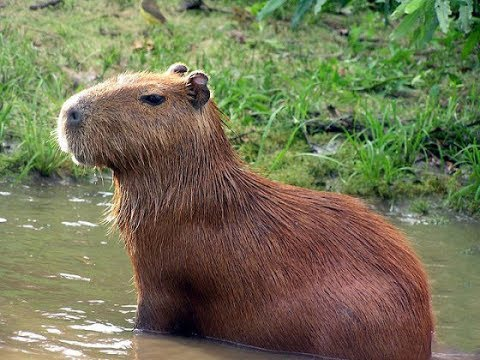

Capivara é só amor
Adote uma capivara
Capimisetas
Capinhas de celular
Parques

A capivara (nome científico: Hydrochoerus hydrochaeris) é uma espécie de mamífero roedor da família Caviidae e subfamília Hydrochoerinae. Alguns autores consideram que deva ser classificada em uma família própria. Está incluída no mesmo grupo de roedores ao qual se classificam as pacas, cutias, os preás e o porquinho-da-índia. Ocorre por toda a América do Sul ao leste dos Andes em habitats associados a rios, lagos e pântanos, do nível do mar até 1 300 m de altitude. Extremamente adaptável, pode ocorrer em ambientes altamente alterados pelo ser humano. É o maior roedor do mundo, pesando até 91 kg e medindo até 1,2 m de comprimento e 60 cm de altura. A pelagem é densa, de cor avermelhada a marrom escuro. É possível distinguir os machos por conta da presença de uma glândula proeminente no focinho apesar do dimorfismo sexual não ser aparente. Existe uma série de adaptações no sistema digestório à herbivoria, principalmente no ceco. Alcança a maturidade sexual com cerca de 1,5 ano de idade, e as fêmeas dão à luz geralmente a quatro filhotes por vez, pesando até 1,5 kg e já nascem com pelos e dentição permanente. Em cativeiro, pode viver até 12 anos de idade.
Curiosidades
Capivaras são excelentes nadadoras. Elas vivem perto de rios e lagoas, para onde costumam fugir no caso de perigo.
Capivaras medem entre 100 e 130 centímetros de largura e 50 de altura. Costumam pesar algo entre 30 e 80 quilos, dependendo do sexo. Fêmeas costumam ser um pouco maiores do que os machos
Os roedores amam água e precisam dela para manter a pele úmida. São encontrados apenas em áreas como estuários, pântanos, margens de rios e próximos de córregos na América Central e do Sul, segundo a União Internacional para a Conservação da Natureza (IUCN).
Assim como as cutias, roedores bem menores que habitam o Brasil, as capivaras não possuem rabo naturalmente. Elas podem pesar de 27 a 79 quilos e medir entre 1 e 1,30 metro, dependendo do gênero. As capivaras fêmeas tendem a ser um pouco maiores que os machos.
A cara de gente boa das capivaras não é enganação; elas são muito sociáveis e vivem em bandos que podem chegar a 100 membros. Além disso, elas curtem dar um rolê pela noite e também logo cedo, já que são animais crepusculares. Isso significa que elas são mais ativas durante o anoitecer e o amanhecer. Caso estejam em um ambiente onde haja predadores à noite, elas podem se tornar animais noturnos, deixando o dia para dormir.
A gravidez de uma capivara pode durar até 120 dias. Ela normalmente dá à luz três filhotes por vez, mas pode engravidar até sete vezes. Os filhotes nascem pesando cerca de 1 a 1,5 quilo e já nascem com dentes. Em 18 semanas, já cresceram a ponto de pesar 40 quilos.
A serenidade no olhar
Por que amar capivaras?
1. Fofinhas
5. De boas com tudo
2. De boas com a vida
4. Precisa de mais?
3. De boa com outros animais
A seriedade no olhar
A malemolencia no olhar
Depoimentos
Minha vida mudou depois que fiz carinho numa capivara aqui no parque Birigui
Capivaras são muito fofinhaaaaass
Uma capivara pode parecer um pouco dura as vezes, talves voce não saiba, mas ela também viveu sem pai. Em seu olhar sereno mora um passado de angústia e tristeza, sozinha, na única lagoa de sua aldeia, teve que encontrar motivação dentro de si. Se um dia ela te disse pra parar de chorar e seguir em frente, é porque disse isso pra si mesma várias vezes
LOLOLOLOLOL Capivaras > porquinhos da india
<3
Em seu olhar, moram anos e anos de experiencia e meditação
A capivara let it go
#Capivaraémeupokemon
En la noche más clara, en el día más oscuro, en el fondo del autobús, reposa el batman piratas del caribe, maldición del viaducto de la marginal
For me, the artist is just people wanting to feed his own ego and wanting to shield himself from any criticism, rejection and denial, claiming that he is beautiful to him and has meaning, when really all he wants is to have something that differentiates him just to be able to speak in the friends wheel
Salve rapaziada